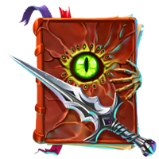

Legiao
Os elfos, ou Primogênitos, foram criados pelo deus Nuadu. Desde tempos imemoriais, eles protegeram o mundo da escuridão, erradicando criaturas em Arinar e curando as feridas por elas causadas. Por muito tempo depois da Guerra da Lança, os elfos permaneceram nas florestas, evitando o contato com outros povos. No entanto, com o surgimento da ameaça da Legião, os Primogênitos começaram a se preparar para proteger o equilíbrio do mundo mais uma vez.
Sentinelas

Os elfos, ou Primogênitos, foram criados pelo deus Nuadu. Desde tempos imemoriais, eles protegeram o mundo da escuridão, erradicando criaturas em Arinar e curando as feridas por elas causadas. Por muito tempo depois da Guerra da Lança, os elfos permaneceram nas florestas, evitando o contato com outros povos. No entanto, com o surgimento da ameaça da Legião, os Primogênitos começaram a se preparar para proteger o equilíbrio do mundo mais uma vez.